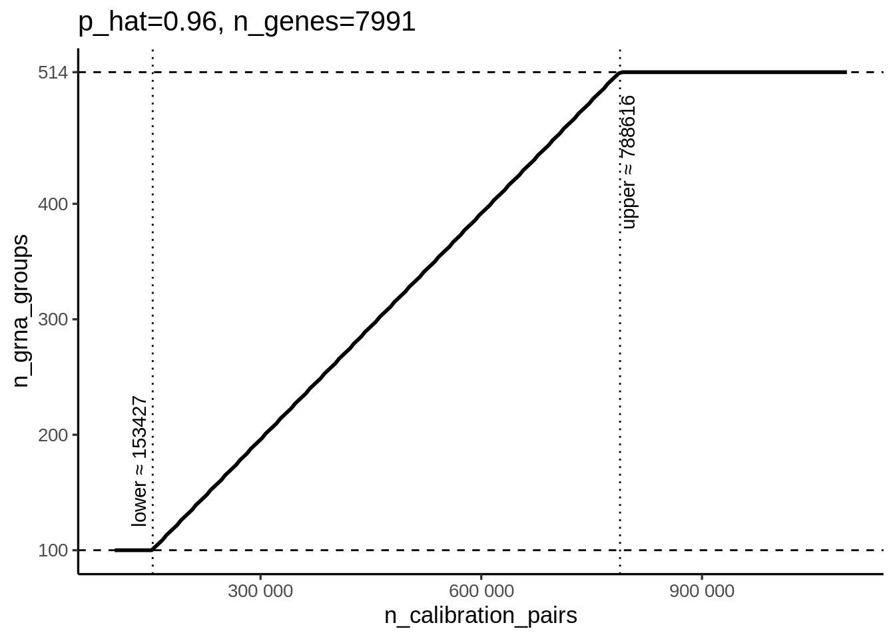
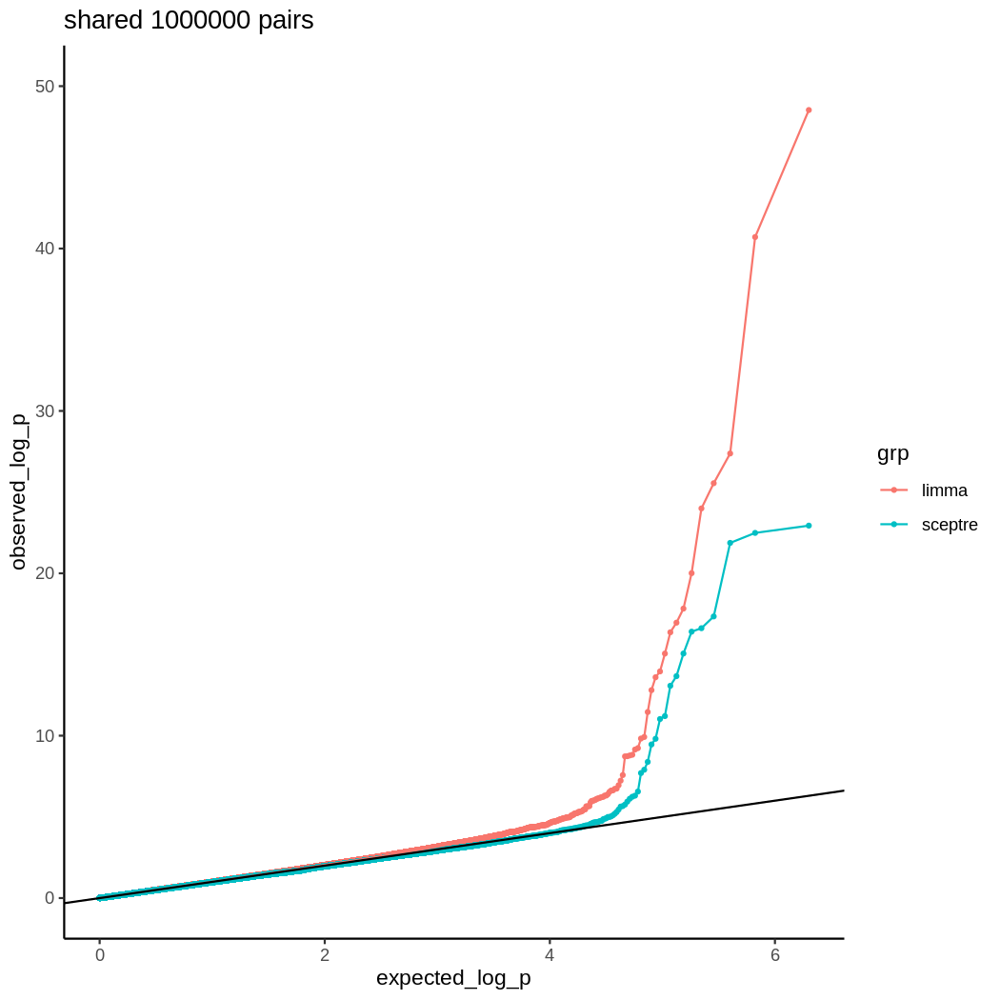
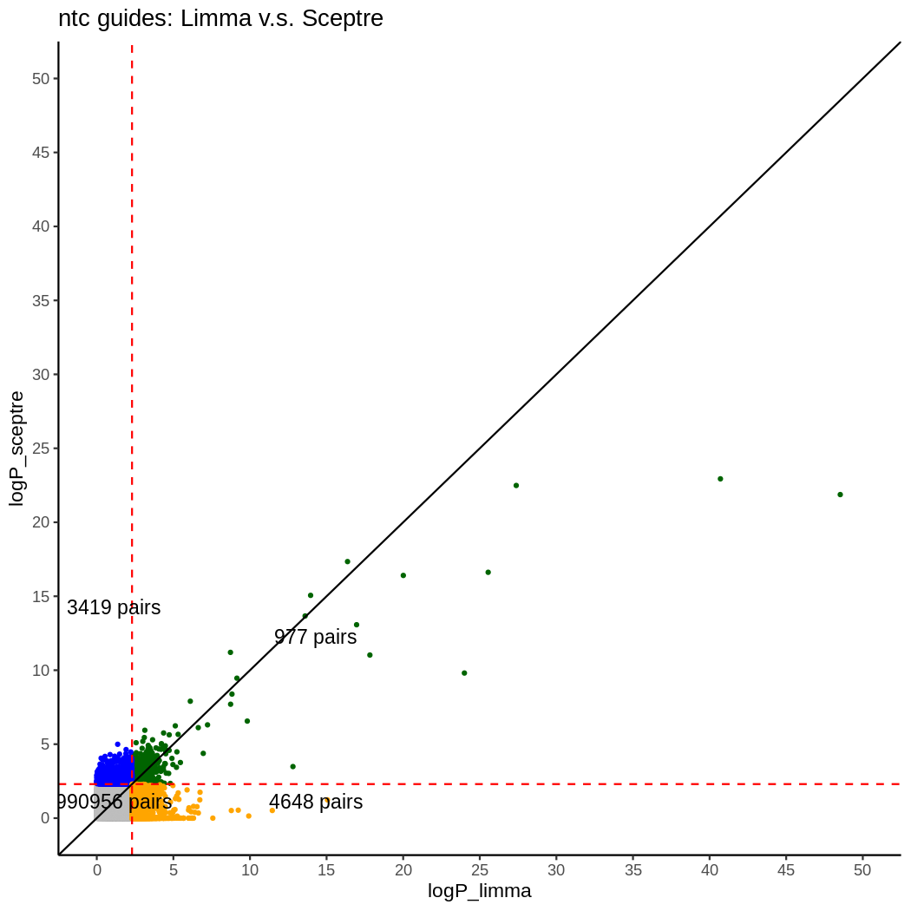
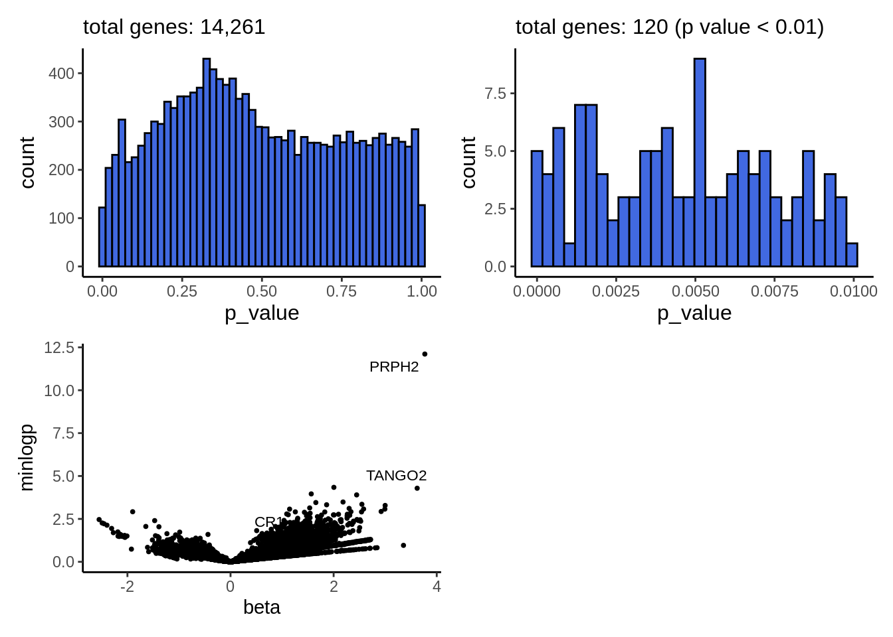

Last updated: 2025-10-22
Checks: 7 0
Knit directory: qltan_postdoc_note/
This reproducible R Markdown analysis was created with workflowr (version 1.7.1). The Checks tab describes the reproducibility checks that were applied when the results were created. The Past versions tab lists the development history.
Great! Since the R Markdown file has been committed to the Git repository, you know the exact version of the code that produced these results.
Great job! The global environment was empty. Objects defined in the global environment can affect the analysis in your R Markdown file in unknown ways. For reproduciblity it’s best to always run the code in an empty environment.
The command set.seed(20250707) was run prior to running the code in the R Markdown file. Setting a seed ensures that any results that rely on randomness, e.g. subsampling or permutations, are reproducible.
Great job! Recording the operating system, R version, and package versions is critical for reproducibility.
Nice! There were no cached chunks for this analysis, so you can be confident that you successfully produced the results during this run.
Great job! Using relative paths to the files within your workflowr project makes it easier to run your code on other machines.
Great! You are using Git for version control. Tracking code development and connecting the code version to the results is critical for reproducibility.
The results in this page were generated with repository version 426f8e6. See the Past versions tab to see a history of the changes made to the R Markdown and HTML files.
Note that you need to be careful to ensure that all relevant files for the analysis have been committed to Git prior to generating the results (you can use wflow_publish or wflow_git_commit). workflowr only checks the R Markdown file, but you know if there are other scripts or data files that it depends on. Below is the status of the Git repository when the results were generated:
Ignored files:
Ignored: .Rhistory
Note that any generated files, e.g. HTML, png, CSS, etc., are not included in this status report because it is ok for generated content to have uncommitted changes.
These are the previous versions of the repository in which changes were made to the R Markdown (analysis/2025.Rmd) and HTML (docs/2025.html) files. If you’ve configured a remote Git repository (see ?wflow_git_remote), click on the hyperlinks in the table below to view the files as they were in that past version.
| File | Version | Author | Date | Message |
|---|---|---|---|---|
| Rmd | 426f8e6 | hmutanqilong | 2025-10-23 | Update_2025_10_21 |
| html | 426f8e6 | hmutanqilong | 2025-10-23 | Update_2025_10_21 |
| html | d69197f | hmutanqilong | 2025-09-03 | Build site. |
| html | a54969b | hmutanqilong | 2025-08-28 | Build site. |
| html | cbb6542 | hmutanqilong | 2025-08-28 | Build site. |
| html | 7dba35f | hmutanqilong | 2025-08-20 | Build site. |
| Rmd | 9efa99a | hmutanqilong | 2025-08-20 | Update_2025_08_20 |
| html | 9efa99a | hmutanqilong | 2025-08-20 | Update_2025_08_20 |
| html | 2a565ec | hmutanqilong | 2025-08-20 | Build site. |
| Rmd | f54695a | hmutanqilong | 2025-08-20 | Update_2025_08_20 |
| html | f54695a | hmutanqilong | 2025-08-20 | Update_2025_08_20 |
| html | 2be8dd1 | hmutanqilong | 2025-08-20 | Build site. |
| Rmd | 91c905d | hmutanqilong | 2025-08-20 | Update_2025_08_20 |
| html | 91c905d | hmutanqilong | 2025-08-20 | Update_2025_08_20 |
| html | 517d8ee | hmutanqilong | 2025-08-20 | Build site. |
| Rmd | 04ff8c6 | hmutanqilong | 2025-08-20 | test2 |
| html | 264ee79 | hmutanqilong | 2025-08-20 | Build site. |
| Rmd | 6715fd7 | hmutanqilong | 2025-08-20 | Update_2025_08_20 |
| html | 6715fd7 | hmutanqilong | 2025-08-20 | Update_2025_08_20 |
| html | e871100 | hmutanqilong | 2025-08-20 | Build site. |
| Rmd | f587a2c | hmutanqilong | 2025-08-20 | Update_2025_08_20 |
| html | f587a2c | hmutanqilong | 2025-08-20 | Update_2025_08_20 |
| html | 1b21f64 | hmutanqilong | 2025-08-20 | Build site. |
| html | 102dcb4 | hmutanqilong | 2025-08-20 | Update:20250820 |
| html | 3dfb98d | hmutanqilong | 2025-08-20 | Build site. |
| Rmd | c354798 | hmutanqilong | 2025-08-20 | Update_2025_08_20 |
| html | 4167755 | hmutanqilong | 2025-07-08 | Build site. |
| Rmd | de7deac | hmutanqilong | 2025-07-08 | Update |
| html | 681c965 | hmutanqilong | 2025-07-08 | Build site. |
| Rmd | bf2c2a4 | hmutanqilong | 2025-07-08 | Publish finished local site |
Perturbation: A change to the genome of a cell carried out by the CRISPR-Cas9 system or one of its variants. Common perturbations include CRISPRko (knockout via nuclease-active Cas9), CRISPRi (inactivation via dCas9 tethered to a repressive domain), CRISPRa (activation via dCas9 tethered to an activating domain).
gRNA: An RNA guiding the Cas9 to its target in order to perturb it.
Target: The genomic element targeted by a gRNA, including gene TSS, enhancer. Typically, mulitple gRNAs are designed to perturb one given target.
Targeting gRNA: A gRNA that is intended to perturb a genomic target.
Non-targeting gRNA: A gRNA which maps to a location whose perturbation is known to have no effect on target gene. In general, we treat Non-targeting gRNAs negative controls.
Response: A molecular readout (gene expression) in the single-cell CRISPR screen, which is the response of perturbation of interest.
Multiplicity of infection (MOI): The MOI of a CRSIPR screen can be categorized as low or high and also can also be numerically quantified. A high MOI dataset is the experiment that aims to insert multiple gRNAs into each cell. A low MOI dataset aims to insert a single gRNA into each cell. The MOI reflects the average of gRNAs delivered per cell. if MOI of 10 means that on average each cell was infected by 10 gRNAs.
some descriptions of sceptre:
main task is “Does perturbing a target impact a response?”
Target-response pair: A pair consisting of a target and a response.For example, a target-response pair could be a specific enhancer coupled to a specific gene. Each target-response pair corresponds to a hypothesis to be tested: Does perturbing the target impact the response?
Negative control pair: A target-response pair in which the target consits of one or more non-targeting gRNAs. Negative control pairs are used to assess the calibration of a statistical analysis method.
Positive control pair: A target-response pair in which the target is a genomic element such as enhancer or gene known to have an effect on the response. Positive control pairs are used to assess the power of a statistical analysis method.
Cis pair: A kind of discovery target-response pair in which the target and response are located in close proximity on the same chromosome.
Trans pair: A a kind of discovery target-response pair for which the target and response are not necessarily located in close proximity or on the same chromosome as one another.
Why dose sceptre exclude all pairs containing each positive control gRNA target from the cis pairs when using construct_cis_pairs(sceptre_object, positive_control_pairs = pc_pairs, distance_threshold = 5e6)?
sceptre authors’ thought: a gRNA target used for a positive control pair is a known biological effector. Its purpose is to produce a large and predictable effect. Including this gRNA target’s pairs in the discovery analysis, such as gRNA-other gene (A, B) pairs, violates the purpose of the discovery analysis. The analysis of these additional pairs is no longer a pure exploration of novel cis-regulatory relationships, but an analysis of the pleiotropic or off-target effects of a known, powerfull perturbation.
In statistics, 1) contaminating the Null Distribution: If a positive control gRNA target is included in the analysis, its strong effect on its target gene (and potentially other genes) will compromise the whole resampleing process. The null distribution will be generated by resampling a powerfull biological effector, which can make the variance of null distribution inflated. The simulation of the null hypothesis would be contaminated by a non-null reality. 2) Distorting the FDR: FDR depends on the overall p-value distribution of test. if we include a set of known, extremely significant p-values from positive control targets (whose p-values may be close to zero) in this distribution will be distorted.
In the calibration step, sceptre samples groups of non-targeting gRNAs to calibrate. The idea is to get enough NTC gRNA target-response pairs to check whether the test is well calibrated. It also depends on the number of qc passed discovery pairs (here is cis pairs). It follows this equation:
\[ \text{n_NTC_gRNAs}= \frac{ \text{MULT_FACTOR} \times \text{n_calibration_pairs} } { \text{p_hat} \times \text{n_genes} } \]
We set MULT_FACTOR to 5 as a redundancy factor.
p_hat represents the estimated probability that an NTC gRNA–gene pair is valid, which is 0.96 in our case.
The total number of genes (n_genes) is 7,991.
For n_calibration_pairs, we ranged it from 101,920 (the real number of cis pairs) up to 1,000,000 so that all NTC gRNAs could be covered.
code below is my simulation result:
suppressPackageStartupMessages(library(tidyverse))unable to deduce timezone name from 'America/Chicago'suppressPackageStartupMessages(library(scales))
compute_n_grna_groups <- function(n_calibration_pairs,
n_genes = 7991,
p_hat = 0.96,
N_POSSIBLE_GROUPS_THRESHOLD = 100L,
n_possible_groups = 514L,
MULT_FACTOR = 5) {
raw <- ceiling(MULT_FACTOR * n_calibration_pairs / (p_hat * n_genes))
lower <- pmax(raw, N_POSSIBLE_GROUPS_THRESHOLD)
out <- ifelse(lower >= n_possible_groups, n_possible_groups, lower)
as.integer(out)
}
p_hat <- 0.96
n_genes <- 7991
N_POSSIBLE_GROUPS_THRESHOLD <- 100L
n_possible_groups <- 514L
MULT_FACTOR <- 5
lower <- N_POSSIBLE_GROUPS_THRESHOLD * p_hat * n_genes / MULT_FACTOR
upper <- n_possible_groups * p_hat * n_genes / MULT_FACTOR
x_vals <- seq(101920, 1100000, by = 5000)
dat <- data.frame(n_calibration_pairs = x_vals)
dat$n_grna_groups <- compute_n_grna_groups(
dat$n_calibration_pairs,
n_genes = n_genes,
p_hat = p_hat,
N_POSSIBLE_GROUPS_THRESHOLD = N_POSSIBLE_GROUPS_THRESHOLD,
n_possible_groups = n_possible_groups,
MULT_FACTOR = MULT_FACTOR
)
p <- ggplot(dat, aes(x = n_calibration_pairs, y = n_grna_groups)) +
geom_line(linewidth = 1) +
geom_hline(yintercept = N_POSSIBLE_GROUPS_THRESHOLD, linetype = 2) + # 上下限
geom_hline(yintercept = n_possible_groups, linetype = 2) +
geom_vline(xintercept = lower, linetype = 3) +
geom_vline(xintercept = upper, linetype = 3) +
annotate("text", x = lower, y = N_POSSIBLE_GROUPS_THRESHOLD + 20,
label = sprintf("lower ≈ %.0f", lower), angle = 90, vjust = -0.5, hjust = 0) +
annotate("text", x = upper, y = n_possible_groups - 20,
label = sprintf("upper ≈ %.0f", upper), angle = 90, vjust = 1.1, hjust = 1) +
labs(
x = "n_calibration_pairs",
y = "n_grna_groups",
title = "p_hat=0.96, n_genes=7991",
) +
scale_y_continuous(breaks = c(100, 200, 300, 400, 514)) +
scale_x_continuous(labels = label_number()) +
theme_classic(base_size = 13)
print(p)
| Version | Author | Date |
|---|---|---|
| 3dfb98d | hmutanqilong | 2025-08-20 |
We compared calibration results of non-targeting gRNAs between limma and sceptre by aligning shared ntc gRNA–gene pairs (~1M) and visualizing overlap with Venn diagrams, QQ plots, and scatter plots to assess concordance and differences in significance.
In sceptre analysis, we manually set n_calibration_pairs = 1000000, which included all 514 NTC gRNAs in the calibration. On average, each NTC gRNA was paired with 1,946 genes as target–response pairs. We totally found 24 significant ntc gRNA pairs at alpha=0.1.
In the limma analysis, every NTC gRNA was paired with the entire set of genes without any restriction. So we obtained 1000,000 shared ntc gRNA pairs.
knitr::include_graphics("assets/2025/figure/limma_sceptre_shared_pairs.png", error = FALSE)venn diagram of shared ntc gRNA pairs
knitr::include_graphics(
c("assets/2025/figure/limma_all_pairs_qqplot.png",
"assets/2025/figure/sceptre_all_pairs_qqplot.png"), error = FALSE)
| Version | Author | Date |
|---|---|---|
| 9707b9e | hmutanqilong | 2025-08-20 |
knitr::include_graphics(
c("assets/2025/figure/limma_vs_sceptre_shared_pairs_qqplot.png",
"assets/2025/figure/limma_vs_sceptre_shared_pairs_scatter_plot.png"), error = FALSE)

shared pairs QQ plot and scatter plot: limma v.s sceptre
Design:
We simulated a null setting where gene expression does not depend on batch. We generated counts for 300 batches × 20 cells per batch from Poisson(μ = 10). For each replicate (500 in total) we fit three glm regressons:
y ~ 1 (intercept-only, the true model)
y ~ batch with batch as continuous
y ~ factor(batch) with batch as categorical
From each Poisson fit we took the fitted means and then estimated the NB size parameter . I calculated residual deviance/df, , and RMSE between and true .
Results: Across 50 replicates, all three models had deviance/df = 1 and very large , suggesting that near-Poisson residuals and no material overdispersion. the p value of in numeric model was with an approximately uniform p-value distribution. For mean estimation, the value of intercept-only is similar with the value of numeric model (small RMSE), but factor had a much larger RMSE. I guess it fits a separate mean per batch from small per-batch sample sizes (only 20 cells).
set.seed(1)
NSIM <- 500
N_BATCH <- 300
CELLS_PER_BATCH <- 20 #每批细胞数量(均衡)
MU_TRUE <- 10 # 各批次真实均值（完全相同）
THETA_CAP <- 1000 # theta上限 sceptre setting is 1000
THETA_LO <- 1e-2 # theta下限
library(MASS) # theta.md
Attaching package: 'MASS'The following object is masked from 'package:dplyr':
selectlibrary(tidyverse)
library(patchwork)
Attaching package: 'patchwork'The following object is masked from 'package:MASS':
arealibrary(scales)
# helper function to estimate theta
theta_est <- function(y, mu, dfr, cap = THETA_CAP, lo = THETA_LO) {
# th_list <- sceptre:::estimate_theta(
# y = y, mu = mu, dfr = dfr,
# limit = 50, eps = (.Machine$double.eps)^(1/4)
# )
# th <- th_list[[1]]
# th <- max(min(th, cap), lo)
# th
th <- tryCatch(MASS::theta.md(y, mu, dfr), error = function(e) NA_real_)
th <- max(min(th, cap), lo)
th
}
# one time simulation
# real: 各批次间无差异，即同均值。
# aim: 此时若把batch加入到协变量中作为连续性变量，是否会使poisson 估计的mu有偏？
fit_once_equal_mu <- function(n_batch = N_BATCH, cells_per_batch = CELLS_PER_BATCH, mu_true = MU_TRUE) {
# 构造均衡批次
batch <- rep(seq_len(n_batch), each = cells_per_batch)
# 真实情况：所有批次均值完全相同
y <- rpois(length(batch), lambda = mu_true)
dat <- data.frame(y = y, batch = batch)
# A) 真模型：截距-only
m_int <- glm(y ~ 1, data = dat, family = poisson())
mu_int <- fitted(m_int)
th_int <- theta_est(dat$y, mu_int, df.residual(m_int))
out_int <- tibble(
model = "Intercept-only (true)",
theta = th_int,
dev = deviance(m_int),
df = df.residual(m_int),
dev_df = dev / df,
beta = NA_real_, se_beta = NA_real_, z_beta = NA_real_, p_beta = NA_real_,
RMSE_mu = sqrt(mean((mu_int - mu_true)^2))
)
# B) 把 batch 当作连续
m_num <- glm(y ~ batch, data = dat, family = poisson())
mu_num <- fitted(m_num)
th_num <- theta_est(dat$y, mu_num, df.residual(m_num))
co <- coef(summary(m_num))
beta_hat <- unname(co[2, "Estimate"])
se_hat <- unname(co[2, "Std. Error"])
z_hat <- unname(co[2, "z value"])
p_hat <- unname(co[2, "Pr(>|z|)"])
out_num <- tibble(
model = "Numeric (batch as continuous)",
theta = th_num,
dev = deviance(m_num),
df = df.residual(m_num),
dev_df = dev / df,
beta = beta_hat, se_beta = se_hat, z_beta = z_hat, p_beta = p_hat,
RMSE_mu = sqrt(mean((mu_num - mu_true)^2))
)
# C) 把 batch 当作因子 or dummy matrix
m_fac <- glm(y ~ factor(batch), data = dat, family = poisson())
mu_fac <- fitted(m_fac)
th_fac <- theta_est(dat$y, mu_fac, df.residual(m_fac))
out_fac <- tibble(
model = "Factor (batch as categorical)",
theta = th_fac,
dev = deviance(m_fac),
df = df.residual(m_fac),
dev_df = dev / df,
beta = NA_real_, se_beta = NA_real_, z_beta = NA_real_, p_beta = NA_real_,
RMSE_mu = sqrt(mean((mu_fac - mu_true)^2))
)
bind_rows(out_int, out_num, out_fac)
}
NSIM <- 50
res <- bind_rows(replicate(NSIM, fit_once_equal_mu(), simplify = FALSE)) %>%
group_by(model) %>% mutate(sim = row_number()) %>% ungroup()
summ <- res %>%
group_by(model) %>%
summarise(
SIM_n = n(),
mean_dev_df = mean(dev_df, na.rm = TRUE),
sd_dev_df = sd(dev_df, na.rm = TRUE),
median_theta = median(theta, na.rm = TRUE),
prop_theta_cap = mean(theta >= THETA_CAP, na.rm = TRUE),
mean_RMSE_mu = mean(RMSE_mu, na.rm = TRUE),
.groups = "drop"
)
kableExtra::kable(summ)| model | SIM_n | mean_dev_df | sd_dev_df | median_theta | prop_theta_cap | mean_RMSE_mu |
|---|---|---|---|---|---|---|
| Factor (batch as categorical) | 50 | 1.019100 | 0.0176873 | 430.5795 | 0.24 | 0.7100287 |
| Intercept-only (true) | 50 | 1.018741 | 0.0173974 | 423.0253 | 0.24 | 0.0319833 |
| Numeric (batch as continuous) | 50 | 1.018792 | 0.0174404 | 436.1709 | 0.26 | 0.0480753 |
library(arrow)Some features are not enabled in this build of Arrow. Run `arrow_info()` for more information.
Attaching package: 'arrow'The following object is masked from 'package:utils':
timestamplibrary(duckplyr)The duckplyr package is configured to fall back to dplyr when it encounters an
incompatibility. Fallback events can be collected and uploaded for analysis to
guide future development. By default, data will be collected but no data will
be uploaded.
ℹ Automatic fallback uploading is not controlled and therefore disabled, see
`?duckplyr::fallback()`.
✔ Number of reports ready for upload: 26373.
→ Review with `duckplyr::fallback_review()`, upload with
`duckplyr::fallback_upload()`.
ℹ Configure automatic uploading with `duckplyr::fallback_config()`.✔ Overwriting dplyr methods with duckplyr methods.
ℹ Turn off with `duckplyr::methods_restore()`.# db <- open_dataset('/project/xuanyao/qilong/Project/Core_Gene_Programs/Johnathan/sceptre/K562_gwps_all_in_one/sceptre_outputs_trans/trans_results/')
# write_parquet(db, '/project/xuanyao/qilong/Project/Core_Gene_Programs/Johnathan/sceptre/K562_gwps_all_in_one/sceptre_outputs_trans/Reploge_2022_Cell_K562_gwps_KD8_all_trans_results.parquet')
db <- read_parquet_duckdb('/project/xuanyao/qilong/Project/Core_Gene_Programs/Johnathan/sceptre/K562_gwps_all_in_one/sceptre_outputs_trans/Reploge_2022_Cell_K562_gwps_KD8_all_trans_results.parquet')
tmp <- db %>% filter(response_id=='ENSG00000206172' & pass_qc == T & grna_target == 'ENSG00000105610')
kableExtra::kable(tmp)| response_id | grna_id | grna_target | n_nonzero_trt | n_nonzero_cntrl | pass_qc | p_value | log_2_fold_change |
|---|---|---|---|---|---|---|---|
| ENSG00000206172 | gRNA:ENSG00000105610 | ENSG00000105610 | 22 | 18518 | TRUE | 0.0008608 | -0.9257564 |
I updated the Perturb-seq data summary document link, and provided some phenotype information which these datasets could be applied to.
We firstly select age-related macular degeneration (AMD) disease, an eye’s disorders, as a pilot trait, because it is considered a well-established case in GWAS studies and has been identified some important core genes including CFH, ARMS2, and HTRA1.
The related perturbation data is based on RPE1 (retinal pigment epithelial) cell line, which was reported by Replogle et al., 2022, Cell.
Here are some descriptions of this dataset.
The RPE1 data in their paper was just perturbed a set of essential genes using CRISPRi tech. These essential genes include :
20Q1 Cancer Dependency Map common essential genes (https://depmap.org/portal/download/);
a number of hand-selected genes with interesting phenotypes in the K562 genome-wide Perturb-seq dataset;
non-targeting control sgRNAs accounting for 5% of the total library.
The Venn diagram shows that a few AMD-related candidate genes overlap.
knitr::include_graphics("assets/2025/figure/Oct/venn_amd_rpe1.png", error = FALSE)overlapped AMD-related genes from GWAScatalog
Perturb-seq data was download from figshare. File name is rpe1_raw_singlecell_01.h5ad, which means raw, single-cell expression data for genes expressed at >0.01 UMI per cell.
In our HPC, I performed such quality control steps:
raw sc data [n_obs × n_vars = 247914 × 8749]
remove the cell without sgRNA [n_obs × n_vars = 247456 × 8749] (-458 cells)
check sgRNA_id mismatch target gene [n_obs × n_vars = 247456 × 8749] (PASS)
remove sgRNA carried by less than 20 cells [n_obs × n_vars = 244984 × 8749] (-189 cells)
tag MT-gene, conduct qc metrics
remove cells with mito percent > 20% [n_obs × n_vars = 244984 × 8749] (0 cells)
remove genes at chrX/Y, chrM [n_obs × n_vars = 244984 × 8469] (-280 genes)
remove outlier cells [n_obs × n_vars = 244493 × 8469] (-491 cells)
finally: n_obs × n_vars = 244493 × 8469; num sgRNA: 2201 target sgRNA + 1 non-targeting; non-targeting cells: 11473
Summary statistic was obtained from the UK Biobank, reported by Backman et al., Nature (2021). Data was downloaded from GWAS Catalog (GCST90083420).
They provided odds ratios, so I converted them to beta using log(OR). I then selected the results that only include pLOF variants (MAF < 0.01), corresponding to the M.001 flag.
The P value distribution is that:
library(data.table)
Attaching package: 'data.table'The following objects are masked from 'package:dplyr':
between, first, lastThe following object is masked from 'package:purrr':
transposelibrary(tidyverse)
library(patchwork)
burden_eff <- fread('/project/xuanyao/qilong/Project/Core_Gene_Programs_II/03_burden_test/macular_degeneration/processed_data/LOF_burdenTest_M1.001_anno.tsv')
burden_eff <- burden_eff %>%
mutate(minlogp = -log10(p_value),
label_gene = gene_name)
burden_eff$label_gene[which(burden_eff$p_value > 0.001)] <- NA
p1_hist <- ggplot(data = burden_eff, aes(x = p_value)) +
geom_histogram(color = 'black', fill = 'royalblue', bins = 50) +
ggtitle("total genes: 14,261") +
theme_classic() +
theme(title = element_text(size = 10),
axis.title = element_text(size = 12))
p2_hist <- ggplot(data = burden_eff[burden_eff$p_value < 0.01, ], aes(x = p_value)) +
geom_histogram(color = 'black', fill = 'royalblue') +
ggtitle("total genes: 120 (p value < 0.01)") +
theme_classic() +
theme(title = element_text(size = 10),
axis.title = element_text(size = 12))
p3_valcano <- ggplot(burden_eff, aes(x = beta, y = minlogp, label = label_gene)) +
geom_point(size = 0.7) +
ggrepel::geom_text_repel(size = 3) +
theme_classic()
p1_hist + p2_hist + p3_valcano + plot_layout(ncol = 2, nrow = 2, byrow = T)`stat_bin()` using `bins = 30`. Pick better value with `binwidth`.
I used all trans pairs to perform the calibration step, but the results still showed some inflation. I then plotted a stratified QQ plot by sgRNA.
A total of 264 pairs showed a difference greater than 1.0 between the observed and expected P-values.
knitr::include_graphics("assets/2025/figure/Oct/plot_stratified_qqplot.png", error = FALSE)non-targeting sgRNA p value distribution
And sceptre p value distribution is that:
knitr::include_graphics("assets/2025/figure/Oct/sceptre_rpe1_p_distribution.png", error = FALSE)SCEPTRE trans discovery pairs p value distribution
Both two methods didn’t identify any signals. Possible reasons might include unmatched perturbed genes corresponding to the AMD trait and the much lower number of significant genes in the burden test (there is only one gene which passed the genome-wide threshold).
sessionInfo()R version 4.1.0 (2021-05-18)
Platform: x86_64-pc-linux-gnu (64-bit)
Running under: CentOS Linux 8
Matrix products: default
BLAS/LAPACK: /software/openblas-0.3.13-el8-x86_64/lib/libopenblas_skylakexp-r0.3.13.so
locale:
[1] LC_CTYPE=en_US.UTF-8 LC_NUMERIC=C
[3] LC_TIME=en_US.UTF-8 LC_COLLATE=en_US.UTF-8
[5] LC_MONETARY=en_US.UTF-8 LC_MESSAGES=en_US.UTF-8
[7] LC_PAPER=en_US.UTF-8 LC_NAME=C
[9] LC_ADDRESS=C LC_TELEPHONE=C
[11] LC_MEASUREMENT=en_US.UTF-8 LC_IDENTIFICATION=C
attached base packages:
[1] stats graphics grDevices utils datasets methods base
other attached packages:
[1] data.table_1.14.8 duckplyr_1.1.0 arrow_20.0.0.2
[4] patchwork_1.3.1.9000 MASS_7.3-60 scales_1.3.0
[7] forcats_0.5.1 stringr_1.5.1 dplyr_1.1.4
[10] purrr_1.0.2 readr_1.4.0 tidyr_1.3.0
[13] tibble_3.2.1 ggplot2_3.5.1 tidyverse_1.3.1
[16] workflowr_1.7.1
loaded via a namespace (and not attached):
[1] httr_1.4.2 sass_0.4.9 bit64_4.6.0-1 jsonlite_1.8.7
[5] viridisLite_0.4.2 modelr_0.1.8 bslib_0.7.0 assertthat_0.2.1
[9] getPass_0.2-2 highr_0.11 cellranger_1.1.0 ggrepel_0.9.6
[13] yaml_2.2.1 collections_0.3.8 pillar_1.10.2 backports_1.4.1
[17] glue_1.6.2 digest_0.6.33 promises_1.2.0.1 rvest_1.0.0
[21] colorspace_2.1-0 htmltools_0.5.8.1 httpuv_1.6.1 pkgconfig_2.0.3
[25] broom_0.7.8 haven_2.4.1 processx_3.8.4 svglite_2.0.0
[29] whisker_0.4.1 later_1.2.0 git2r_0.32.0 generics_0.1.3
[33] farver_2.1.1 ellipsis_0.3.2 cachem_1.0.8 withr_2.5.2
[37] cli_3.6.1 magrittr_2.0.3 crayon_1.5.2 readxl_1.3.1
[41] memoise_2.0.1 evaluate_0.23 ps_1.7.5 fs_1.6.3
[45] xml2_1.3.2 tools_4.1.0 hms_1.1.0 lifecycle_1.0.4
[49] munsell_0.5.0 reprex_2.0.0 callr_3.7.6 kableExtra_1.4.0
[53] compiler_4.1.0 jquerylib_0.1.4 duckdb_1.3.1 systemfonts_1.1.0
[57] rlang_1.1.6 grid_4.1.0 rstudioapi_0.15.0 labeling_0.4.3
[61] rmarkdown_2.27 gtable_0.3.6 DBI_1.2.3 R6_2.5.1
[65] lubridate_1.7.10 knitr_1.48 fastmap_1.1.1 bit_4.0.5
[69] rprojroot_2.0.4 stringi_1.6.2 Rcpp_1.0.12 vctrs_0.6.4
[73] dbplyr_2.1.1 tidyselect_1.2.0 xfun_0.45